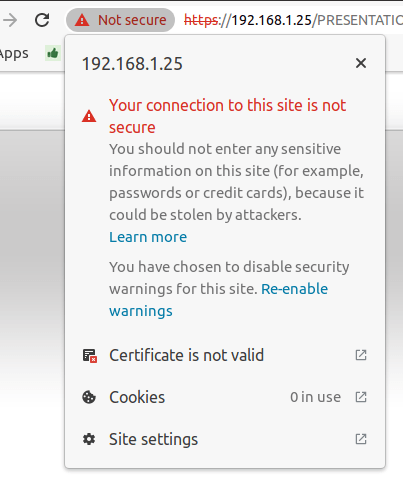
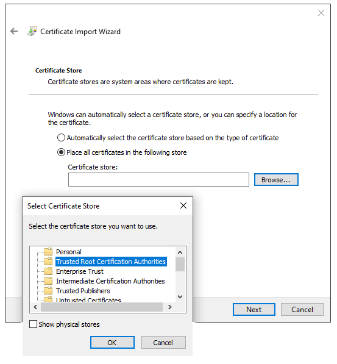

Self-signed certificate for ePOS printers¶
To work with Odoo, some printer models that can be used without an IoT box may require the HTTPS protocol to establish a secure connection between the browser and the printer. However, trying to reach the printer’s IP address using HTTPS leads to a warning page on most web browsers. In that case, you can temporarily force the connection, which allows you to reach the page in HTTPS and use the ePOS printer in Odoo as long as the browser window stays open.
Warning
The connection is lost after closing the browser window. Therefore, this method should only be used as a workaround or as a pre-requisite for the following instructions.
Generate, export, and import self-signed certificates¶
For a long-term solution, you must generate a self-signed certificate. Then, export and import it into your browser.
Important
Generating an SSL certificate should only be done once. If you create another certificate, devices using the previous one will lose HTTPS access.
Navigate to the ePOS’ IP address (e.g., https://192.168.1.25) and force the
connection by clicking Advanced and Proceed to [IP address]
(unsafe).

Warning page on Google Chrome, Windows 10¶
Then, sign in using your printer credentials to access the ePOS printer settings. To
sign in, enter epson in the ID field and your printer serial number in the
Password field.
Click Certificate List in the Authentication section, and click create to generate a new Self-Signed Certificate. The Common Name should be automatically filled out. If not, fill it in with the printer IP address number. Select the years the certificate will be valid in the Validity Period field, click Create, and Reset or manually restart the printer.
The self-signed certificate is generated. Reload the page and click SSL/TLS in the Security section to ensure Selfsigned Certificate is correctly selected in the Server Certificate section.
The export process is heavily dependent on the OS and the
browser. Start by accessing your ePOS printer settings on your web browser by navigating
to its IP address (e.g., https://192.168.1.25). Then, force the connection as
explained in the Generate a self-signed certificate tab.
If you are using Google Chrome,
click Not secure next to the search bar, and Certificate is not valid;
go to the Details tab and click Export;
add
.crtat the end of the file name to ensure it has the correct extension;select Base64-encoded ASCII, single certificate, at the bottom of the pop-up window;
save, and the certificate is exported.
Warning
Make sure that the certificate ends with the extension .crt. Otherwise, some
browsers might not see the file during the import process.
If you are using Mozilla Firefox,
click the lock-shaped icon on the left of the address bar;
go to ;
scroll down to the Miscellaneous section;
click PEM (cert) in the Download section;
save, and the certificate is exported.
The import process is heavily dependent on the OS and the browser.
Windows 10 manages certificates, which means that self-signed certificates must be imported from the certification file rather than the browser. To do so,
open the Windows File Explorer and locate the downloaded certification file;
right-click on the certification file and click Install Certificate;
select where to install the certificate and for whom - either for the Current User or all users (Local Machine). Then, click Next;
on the
Certificate Storescreen, tick Place all certificates in the following store, click Browse…, and select Trusted Root Certification Authorities;click Finish, accept the pop-up security window;
restart the computer to make sure that the changes are applied.
If you are using Google Chrome,
open Chrome;
go to ;
go to the Authorities tab, click Import, and select the exported certification file;
accept all warnings;
click ok;
restart your browser.
If you are using Mozilla Firefox,
open Firefox;
go to ;
select the exported certification file;
tick the checkboxes and validate;
restart your browser.
On Mac OS, you can secure the connection for all browsers by following these steps:
open Safari and navigate to your printer’s IP address. Doing so leads to a warning page;
on the warning page, go to , validate;
reboot the printer so you can use it with any other browser.
To generate and export an SSL certificate and send it to IOS devices, open Google Chrome or Mozilla Firefox. Then,
Navigate to the ePOS’ IP address (e.g., https://192.168.1.25) and force the
connection by clicking Advanced and Proceed to [IP address]
(unsafe).
Warning page on Google Chrome, Windows 10¶
Then, sign in using your printer credentials to access the ePOS printer settings. To
sign in, enter epson in the ID field and your printer serial number in the
Password field.
Click Certificate List in the Authentication section, and click create to generate a new Self-Signed Certificate. The Common Name should be automatically filled out. If not, fill it in with the printer IP address number. Select the years the certificate will be valid in the Validity Period field, click Create, and Reset or manually restart the printer.
The self-signed certificate is generated. Reload the page and click SSL/TLS in the Security section to ensure Selfsigned Certificate is correctly selected in the Server Certificate section.
The export process is heavily dependent on the OS and the
browser. Start by accessing your ePOS printer settings on your web browser by navigating
to its IP address (e.g., https://192.168.1.25). Then, force the connection as
explained in the Generate a self-signed certificate tab.
If you are using Google Chrome,
click Not secure next to the search bar, and Certificate is not valid;
go to the Details tab and click Export;
add
.crtat the end of the file name to ensure it has the correct extension;select Base64-encoded ASCII, single certificate, at the bottom of the pop-up window;
save, and the certificate is exported.
Warning
Make sure that the certificate ends with the extension .crt. Otherwise, some
browsers might not find the file during the import process.
If you are using Mozilla Firefox,
click the lock-shaped icon on the left of the address bar;
go to ;
scroll down to the Miscellaneous section;
click PEM (cert) in the Download section;
save, and the certificate is exported.
To import an SSL certificate into an Android device, first create and export it from a
computer. Next, transfer the .crt file to the device using email, Bluetooth, or USB. Once
the file is on the device,
open the settings and search for
certificate;click Certificate AC (Install from device storage);
select the certificate file to install it on the device.
Note
The specific steps for installing a certificate may vary depending on the version of Android and the device manufacturer.
To import an SSL certificate into an iOS device, first create and export it from a computer.
Then, transfer the .crt file to the device using email, Bluetooth, or any file-sharing
service.
Downloading this file triggers a warning pop-up window. Click Allow to download the configuration profile, and close the second pop-up window. Then,
go to the Settings App on the iOS device;
click Profile Downloaded under the user’s details box;
locate the downloaded
.crtfile and select it;click Install on the top right of the screen;
if a passcode is set on the device, enter the passcode;
click Install on the top right of the certificate warning screen and the pop-up window;
click Done.
The certificate is installed, but it still needs to be authenticated. To do so,
go to ;
enable the installed certificate using the slide button;
click Continue on the pop-up window.
Important
If you need to export SSL certificates from an operating system or web browser that has not been mentioned, search for
export SSL certificate+the name of your browser or operating systemin your preferred search engine.Similarly, to import SSL certificates from an unmentioned OS or browser, search for
import SSL certificate root authority+the name of your browser or operating systemin your preferred search engine.
Check if the certificate was imported correctly¶
To confirm your printer’s connection is secure, connect to its IP address using HTTPS. For example,
navigate to https://192.168.1.25 in your browser. If the SSL certificate has been applied
correctly, you should no longer see a warning page, and the address bar should display a padlock
icon, indicating that the connection is secure.